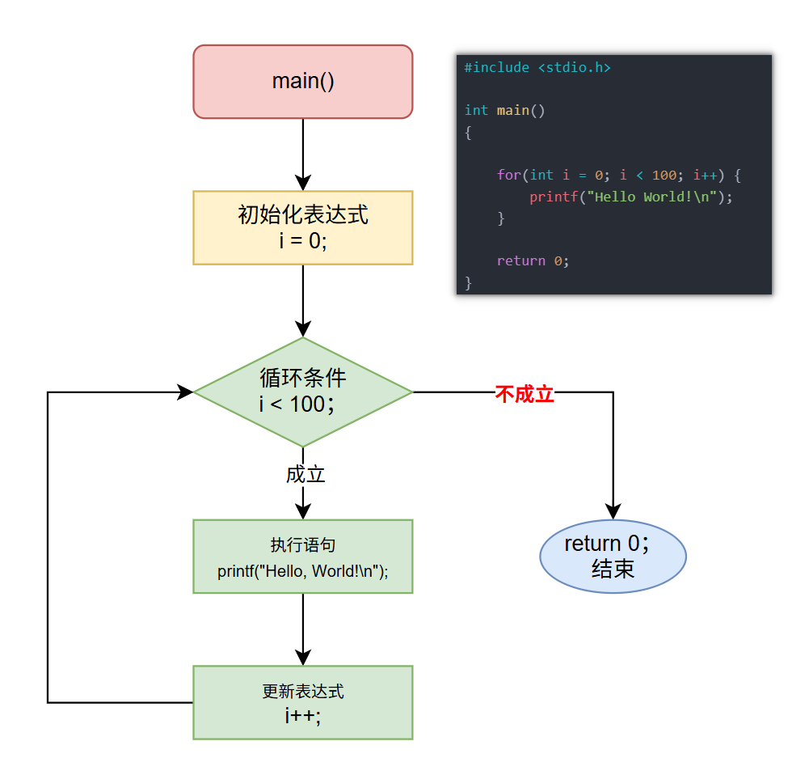

<!DOCTYPE lake>
<h1 data-lake-id="nZFkr" id="nZFkr"><span data-lake-id="u15020fd6" id="u15020fd6">0&gt; 功能需求</span></h1><p data-lake-id="uc1ad8461" id="uc1ad8461"><span data-lake-id="u917f7a5d" id="u917f7a5d">计算机干重复事最拿手，让计算机打印100遍"Hello World"</span></p><hr/><h1 data-lake-id="BhXpa" id="BhXpa"><span data-lake-id="ub6a1b390" id="ub6a1b390">1&gt; 程序设计</span></h1><span class="yuque-card-unsupported">[codeblock]</span><hr/><h1 data-lake-id="gYhV2" id="gYhV2"><span data-lake-id="u10e150d9" id="u10e150d9">2&gt; 语法基础</span></h1><span class="yuque-card-unsupported">[codeblock]</span><p data-lake-id="u81435131" id="u81435131"><span data-lake-id="u30b30973" id="u30b30973">执行流程图：</span></p><p data-lake-id="u0abb6d61" id="u0abb6d61"></p><hr/><h1 data-lake-id="gbRao" id="gbRao"><span data-lake-id="u259ce054" id="u259ce054">🐻</span><span data-lake-id="u56f8ce18" id="u56f8ce18">实践练习：</span></h1><p data-lake-id="uba0428cd" id="uba0428cd"><span data-lake-id="u6ca55b22" id="u6ca55b22">习题 1&gt; 编写程序打印10到1;</span></p><p data-lake-id="u8f6012d1" id="u8f6012d1"><span data-lake-id="ua65cf582" id="ua65cf582">习题 2&gt; 计算1到100的累加和（解题思路：大事化下，先打印出1~100， 再累加）;</span></p><hr/><h1 data-lake-id="d3wQ9" id="d3wQ9"><span data-lake-id="ucc66bee3" id="ucc66bee3">3&gt; 嵌套for循环</span></h1><p data-lake-id="ueb183d43" id="ueb183d43"><span data-lake-id="u3221b662" id="u3221b662">功能需求  : 打印矩形图案</span></p><span class="yuque-card-unsupported">[codeblock]</span><span class="yuque-card-unsupported">[codeblock]</span><p data-lake-id="ufc5a1cb6" id="ufc5a1cb6"><span data-lake-id="u4a5a59b9" id="u4a5a59b9">循环思维4步详解：</span></p><p data-lake-id="uf3b24a98" id="uf3b24a98" style="text-indent: 2em"><span data-lake-id="ud15d84ce" id="ud15d84ce">识别：    发现代码中的重复模式</span></p><p data-lake-id="uc62b3f19" id="uc62b3f19" style="text-indent: 2em"><span data-lake-id="u78f43a4c" id="u78f43a4c">抽象：    提取重复部分作为循环体</span></p><p data-lake-id="u49de426c" id="u49de426c" style="text-indent: 2em"><span data-lake-id="u7ccb0e3a" id="u7ccb0e3a">参数化：将重复次数转化为循环变量</span></p><p data-lake-id="uf11042a5" id="uf11042a5" style="text-indent: 2em"><span data-lake-id="u15b6da79" id="u15b6da79">验证：    确认边界条件下的循环行为</span></p><hr/><h1 data-lake-id="byNK0" id="byNK0"><span data-lake-id="ub80a79e6" id="ub80a79e6">🐻</span><span data-lake-id="u2c351b22" id="u2c351b22">实践练习：</span></h1><p data-lake-id="u882d76e5" id="u882d76e5"><span data-lake-id="u3d748c54" id="u3d748c54">练习 1&gt; : 打印</span><span data-comment-id="42964401" data-lake-id="ub144eb96" id="ub144eb96">直角</span><span data-lake-id="u45899b33" id="u45899b33">三角形图案</span></p><span class="yuque-card-unsupported">[codeblock]</span><p data-lake-id="u04039585" id="u04039585"><br/></p><p data-lake-id="u1960ed2c" id="u1960ed2c"><span class="lake-fontsize-14" data-lake-id="u502ca010" id="u502ca010">练习 2&gt; : 打印乘法表</span></p><span class="yuque-card-unsupported">[codeblock]</span><span class="yuque-card-unsupported">[codeblock]</span><h1 data-lake-id="ntUwS" id="ntUwS"><span data-lake-id="u7d4c55c1" id="u7d4c55c1">4&gt; 死循环for(;;)</span></h1><span class="yuque-card-unsupported">[codeblock]</span><p data-lake-id="u4f1635ea" id="u4f1635ea"><code data-lake-id="u1559203e" id="u1559203e"><span class="lake-fontsize-14" data-lake-id="u2c594865" id="u2c594865">Ctrl + Shift +Esc</span></code><span class="lake-fontsize-14" data-lake-id="u19c6f0dc" id="u19c6f0dc"> 查看内存运行情况</span></p>